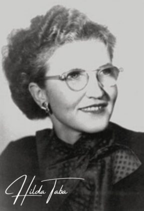
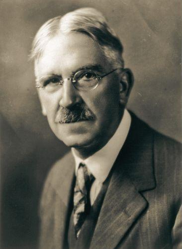

-
Enfoque Inductivo: Taba propone que el diseño curricular debe partir de las experiencias y necesidades de los estudiantes. Se inicia desde lo específico (contenidos y actividades) hacia lo general (objetivos y competencias), construyendo el currículo a partir de observaciones y evidencias de aprendizaje.
-
Participación Docente: Este modelo otorga a los docentes un rol central en la creación del currículum. La idea es que, al estar en contacto directo con los estudiantes, los docentes puedan comprender mejor las necesidades educativas y, por lo tanto, diseñar contenidos y actividades más relevantes.
-
Adaptación Continua: Al ser un modelo flexible, permite ajustes en el currículum en función de los cambios en el contexto educativo, las características de los estudiantes y los avances en el conocimiento.

Muchos estudiosos sitúan el enfoque pedagógico de Dewey en un punto intermedio entre la pedagogía conservadora, centrada en el currículo, y la pedagogía que se centraba en el alumno. Y es que, aunque Dewey enfocaba la pedagogía en el niño y en sus intereses, también resaltaba la necesidad de relacionar estos intereses con los contenidos sociales definidos en el currículo escolar.
Esto significa que aunque debe valorarse la destreza individual, estas características no constituyen un fin en sí mismas, sino que deben servir como posibilitadoras de acciones y experiencias. Y en este caso, la función del maestro sería explotar tales habilidades.
Para entender las ideas pedagógicas de Dewey es esencial tener en cuenta la posición instrumentalista en la que se basaba su pensamiento filosófico. Según su planteamiento, el pensamiento es básicamente una herramienta que les permite a las personas actuar sobre la realidad, al tiempo que se nutre de ella. Ello significa que el conocimiento no es más que el resultado de las experiencias de las personas con el mundo. En pocas palabras, el conocimiento es simplemente un pensamiento que primero pasa por la acción.

John Dewey (1859-1952) fue un filósofo, psicólogo y pedagogo estadounidense, uno de los fundadores de la filosofía del pragmatismo y una de las figuras más representativas de la pedagogía progresista en su país. Dewey fue uno de los personajes que más influyó en el desarrollo del progresismo pedagógico. Defendió la igualdad de la mujer y fomentó el sindicalismo docente. Además promovió la ayuda a los intelectuales exiliados por los regímenes totalitarios que los acechaban. Dewey fue catalogado como un hombre de acción, que abogaba por la unificación de pensamiento y la acción, de la teoría y la práctica. Muestra de ello es que fue una pieza importante en las reformas educativas y un impulsor de distintos métodos pedagógicos en las distintas universidades donde trabajó.
El modelo curricular de Tyler es uno de sus mayores legados en el mundo educativo. Se basa en una estructura clara y lógica que enfatiza Identificar las necesidades educativas de los estudiantes. Tyler entendía que un currículo efectivo debe estar diseñado con un propósito claro y orientado al aprendizaje.
Las principales propuestas del modelo curricular de Tyler incluyen la idea de poner a los estudiantes en el centro del proceso educativo. El currículo debe ser relevante y significativo, proporcionando a los estudiantes las herramientas necesarias para convertirse en ciudadanos responsables. «Tal relevancia se puede resumir en la forma en que el enfoque de Tyler busca dar a los alumnos no solo conocimiento, sino también habilidades para aplicarlo en su vida diaria.»
Uno de los aspectos más conocidos del modelo curricular de Ralph Tyler son las cuatro preguntas clave que deben ser consideradas al crear un currículo educativo. Estas preguntas son:
- ¿Qué objetivos educativos queremos alcanzar?
- ¿Qué experiencias educativas pueden ayudar a alcanzar estos objetivos?
- ¿Cómo podemos organizar eficientemente estas experiencias?
- ¿Cómo evaluaremos el aprendizaje de los estudiantes?

Consideraba que el currículo era una forma de preparar a los estudiantes para sus futuros roles en la nueva sociedad industrial. Influyó en el currículo al mostrar cómo la enseñanza de asignaturas clásicas debía sustituirse por asignaturas que respondieran a las necesidades sociales.
En 1918, Bobbitt escribió El currículo: un resumen del desarrollo relativo a la teoría del currículo. Esta se convirtió en una especialización oficial en las ciencias de la educación. El punto de partida de un currículo era, según Bobbitt, ver qué resultados debían alcanzarse.Bobbitt consideraba que el currículo debía adaptarse a las necesidades individuales y a las de la nueva sociedad industrial. No se debía enseñar a las personas lo que nunca usarían. Solo debían aprender las habilidades necesarias para cumplir con sus tareas personales. Según Bobbitt, la educación era principalmente una preparación para la vida adulta, no para la infancia o la juventud.
Esto resultó en una temprana diferenciación educativa. Bobbitt no apoyaba la coeducación. En su opinión, las niñas tenían un futuro muy diferente al de los niños, por lo que no necesitaban el mismo tipo de educación.Bobbitt creó cinco pasos para la elaboración de currículos:
(a) análisis de la experiencia humana: Separar toda la experiencia humana en campos principales
(b) análisis del puesto de trabajo: Los campos se desglosaron en actividades más específicas.
(c) determinación de objetivos: Formular el objetivo a partir de las habilidades necesarias para realizar las actividades.
(d) selección de objetivo: Seleccionar los objetivos que servirían de base para la planificación de actividades para los estudiantes.
(e) planificación detallada: definir las actividades, experiencias y oportunidades necesarias para alcanzar los objetivos.